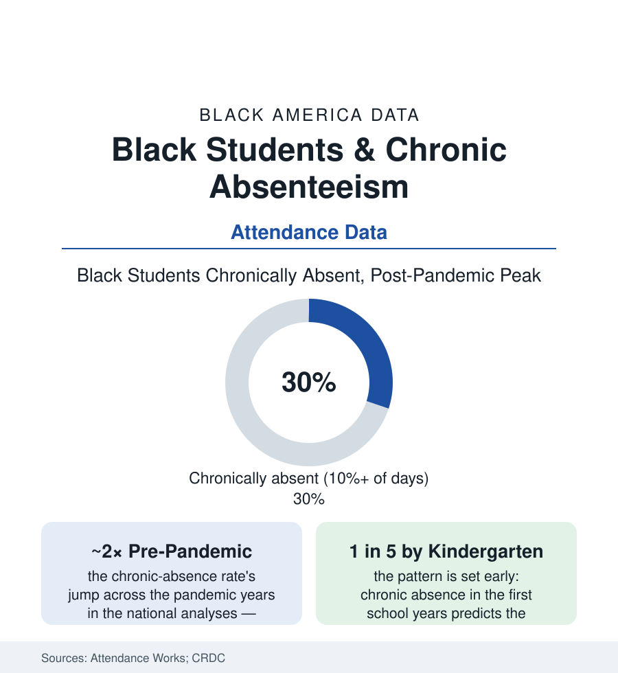

Black Education
Chronic Absenteeism: The Attendance Gap That Doubled
About three in ten Black students were chronically absent in the post-pandemic data — missing a month or more of school. The attendance file, its causes, and the districts moving it.

The simplest data in education — was the child in the building — produced its most alarming post-pandemic series: chronic absenteeism, defined as missing ten percent or more of the school year (about eighteen days), roughly doubled nationally across the pandemic, and for Black students reached around three in ten in the peak analyses by Attendance Works and the federal Civil Rights Data Collection. Absence is never one problem; it is the readout of transportation, health, housing, and belonging arriving at the schoolhouse door each morning. This article reads the attendance file.
The Numbers: A Doubling With a Shape
The national series draw the spike and its uneven retreat: overall chronic absence from about fifteen percent before the pandemic to the high twenties at the peak, easing only partway back in the most recent state dashboards — and the Black student rate running above the national line throughout, roughly thirty percent at the peak, with several large urban districts' Black-student rates in the forties in their published data. The decomposition matters more than the headline: the severity tiers (the students missing twenty, thirty, fifty percent of the year — a population that grew fastest of all in the analyses, its size in the millions nationally), the grade pattern (worst in kindergarten, improving through elementary, spiking again in the high-school years — the U of the attendance curve the longitudinal studies document), and the concentration (the high-absence schools of the funding file carrying rates no intervention budget matches, absence as a school-level condition and not only a family one). The honest comparison belongs in the frame: the gap by race narrowed in relative terms precisely because absence rose for everyone — the file's one statistic that improved by getting worse.
The Causes, in the Data's Own Order
The barrier surveys and the district case data sort the causes with unusual consistency: health first in the recent years (the illness norms rewritten by the pandemic era — the stay-home-when-sick message internalized past its intent, the asthma file's attendance signature, the dental-pain and vision items of the health section's school chapters), transportation second (the bus-driver shortage's route cuts in the district data, the car-access file's morning arithmetic, the rural file's two-hour rides), housing third (the homeless-students file's mobility, the eviction file's mid-year moves, the doubling-up churn), and the school-side factors the belonging research owns (the discipline file's exclusions counted inside absence itself, the students whose suspensions became their attendance record; the climate surveys' safety and welcome measures correlating with attendance at the school level; the coursework's relevance as the high-school data's recurring theme). The pre-pandemic file's old causes did not retire: the caregiving duties in the multigenerational household, the work shifts of the youth-employment file, the court and appointment calendars of the system's other files — absence as the sum of every other table in this atlas, collected daily at 8 a.m.
What Moves It: The Intervention Evidence
The attendance literature is unusually practical, and its findings are modest in the honest way: the communication interventions (the personalized absence-information mailings and texts to families — the randomized trials' consistent result, reducing chronic absence by meaningful margins at near-zero cost, the information gap between the school's count and the family's estimate being the cheapest finding in the field), the mentoring models (the Check & Connect and Success Mentors programs' evaluated gains among the chronically absent), the health-side fixes (the school-based health centers' attendance effects in their studies, the asthma-management programs, the laundry and hygiene access of the district experiments), the transportation repairs (the route restorations, the transit-pass programs of the city districts), and the home-visiting models for the severe tier (the family-engagement workers of the post-pandemic district programs, their caseload data in the recovery plans). The enforcement era stands in the same literature as the control case: the punitive truancy machinery's outcomes (the fines and court referrals' null-to-negative findings, the family-court funnel's own disparities) against the support model's positive ones — the field having run the experiment and published the result. The recent state data give the file its direction: the districts pairing the data systems with the family-facing supports posting the fastest declines from the peak, the rates' retreat tracking investment more faithfully than exhortation.
Reading the Attendance Data
Three in ten at the peak, easing slowly, caused by everything and therefore fixable by specifics: absenteeism is the education file's vital sign — the number into which every other number in this atlas empties, taken every morning, in public. The districts learning to move it are not performing a mystery. They are counting honestly, calling home kindly, and fixing the bus route. The data say the rest follows.
More in Black Education
Black Educational Attainment: High School Parity, the College Gap
About 89 percent of Black adults hold a high school diploma and one in four holds a bachelor's degree or higher — the attainment ladder, the college completion gap, and the generational trend.
Historically Black Colleges and Universities: Enrollment and Degrees
More than 100 HBCUs enroll roughly 290,000 students and award about one in six Black bachelor's degrees — an outsized share from a small sector. The federal education data.
Black College Enrollment: 2.4 Million Students
About 2.4 million Black students are enrolled in American colleges — nearly two-thirds of them women. The NCES enrollment data by sector, level, and trend.
Source: Attendance Works and Johns Hopkins Everyone Graduates Center analyses; U.S. Department of Education Civil Rights Data Collection; National Center for Education Statistics; state attendance dashboards.